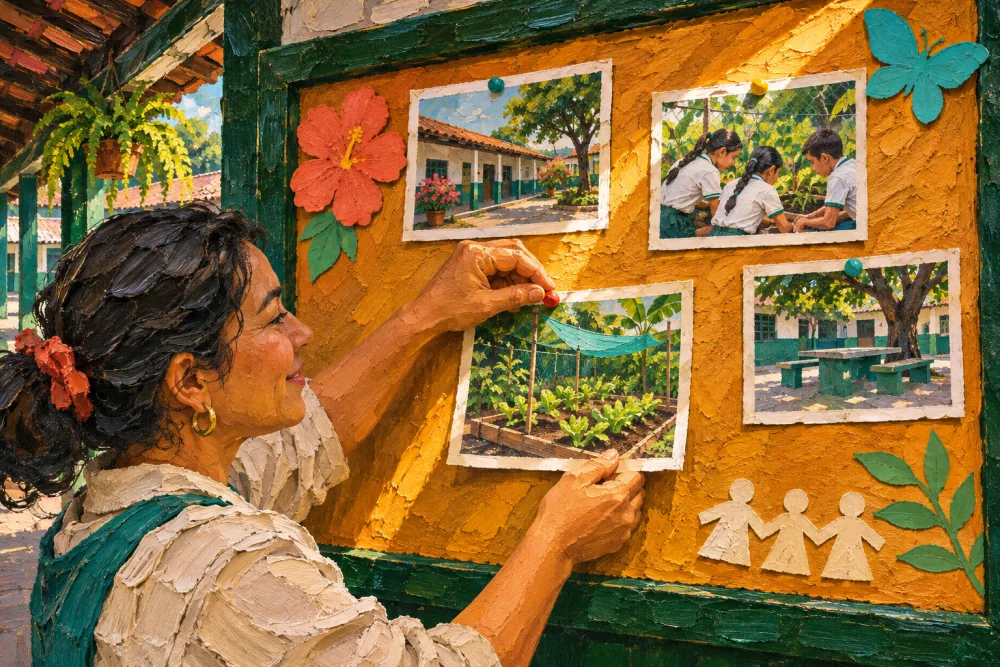
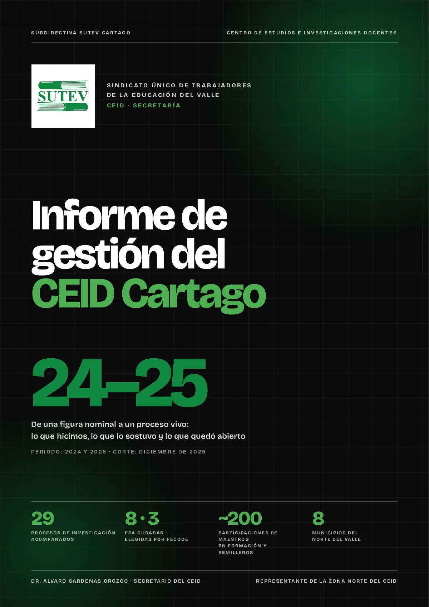
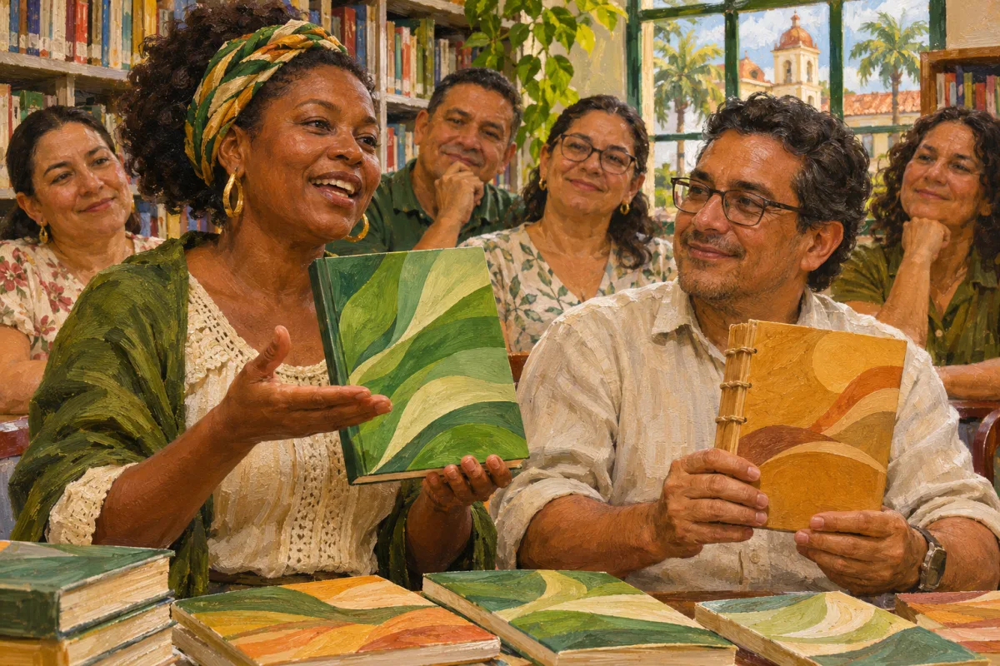
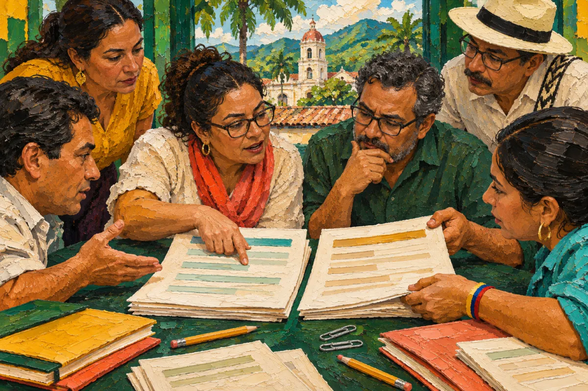
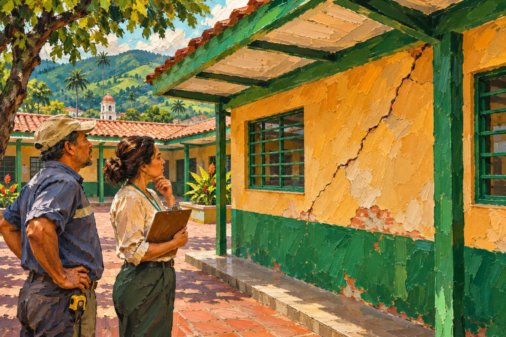
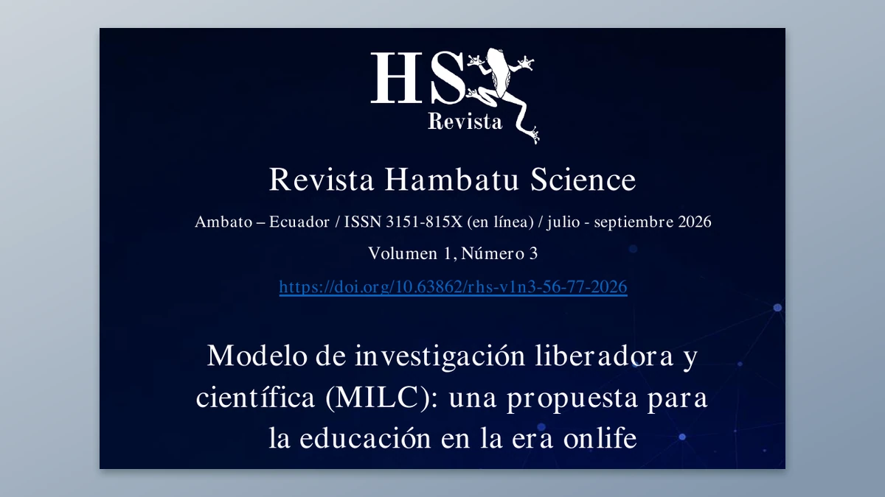
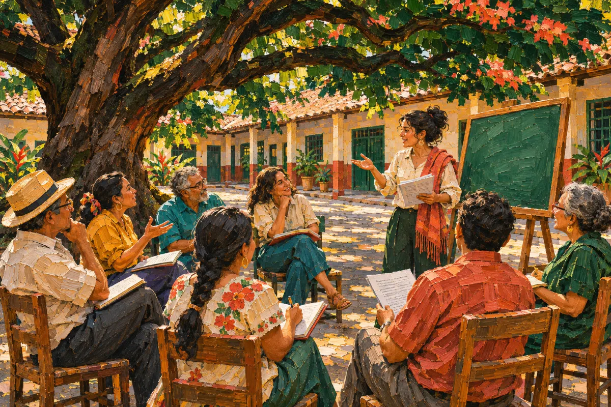
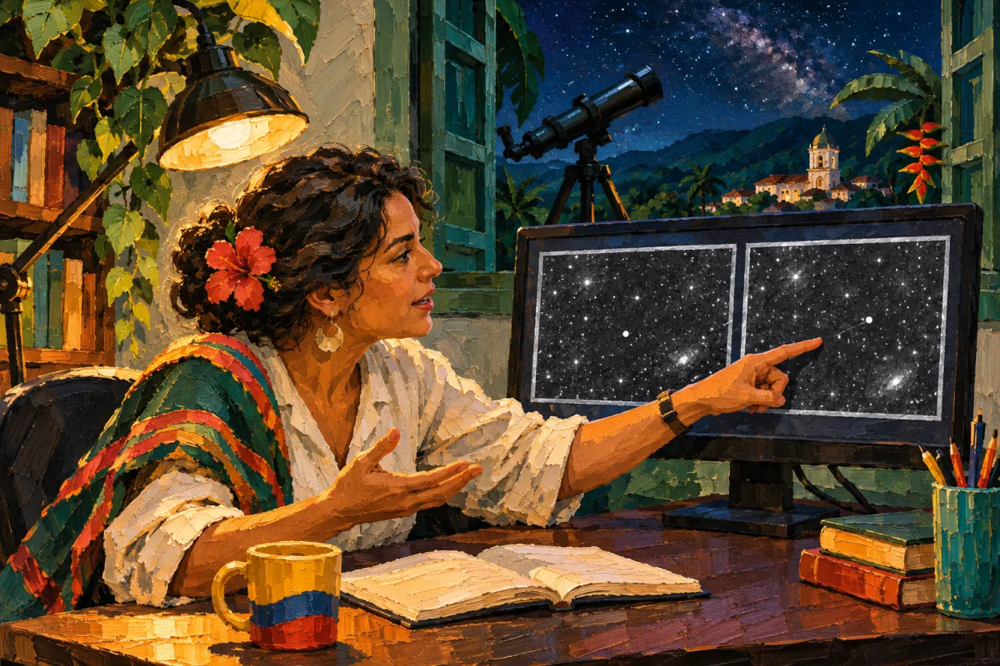

Novedades
Todo lo que publica el CEID Cartago, del más reciente al más antiguo, con su sección.

 NoticiaVíctor Manuel Betancur: del campo al aula, y del aula al productoVíctor Manuel Betancur, docente de la I. E. Zaragoza (Cartago): agro, ciencia y emprendimiento, de la sede rural de Coloradas a la agroindustria.7 de noviembre de 2026 · Cartago
NoticiaVíctor Manuel Betancur: del campo al aula, y del aula al productoVíctor Manuel Betancur, docente de la I. E. Zaragoza (Cartago): agro, ciencia y emprendimiento, de la sede rural de Coloradas a la agroindustria.7 de noviembre de 2026 · CartagoMás novedades
 Curso autoformativoCurso EPA y PEPA: de la experiencia de aula al proyecto pedagógico alternativoCurso autoformativo y gratuito: en 5 sesiones reconoces si tu práctica es una EPA, la sistematizas y la llevas a un círculo pedagógico, al foro o a la revista.5 horas · gratis · constancia del CEID · educación informal, no conduce a título alguno
Curso autoformativoCurso EPA y PEPA: de la experiencia de aula al proyecto pedagógico alternativoCurso autoformativo y gratuito: en 5 sesiones reconoces si tu práctica es una EPA, la sistematizas y la llevas a un círculo pedagógico, al foro o a la revista.5 horas · gratis · constancia del CEID · educación informal, no conduce a título alguno EPAReconocimiento a las ocho EPA del Norte del Valle para el 3.er Congreso Pedagógico NacionalReconocimiento del CEID Cartago a las ocho EPA del Norte del Valle curadas para el 3.er Congreso Pedagógico Nacional y a los docentes que las sostienen.4 de noviembre de 2026 · Toda la subdirectiva
EPAReconocimiento a las ocho EPA del Norte del Valle para el 3.er Congreso Pedagógico NacionalReconocimiento del CEID Cartago a las ocho EPA del Norte del Valle curadas para el 3.er Congreso Pedagógico Nacional y a los docentes que las sostienen.4 de noviembre de 2026 · Toda la subdirectiva NoticiaSebastian Giraldo: de un aula de Cartago a los retos de Marte y la LunaSebastian Giraldo, docente de la I. E. Sor María Juliana (Cartago): retos de Explore Mars con sus estudiantes, la SEEC en Houston y ferias de ciencia.4 de noviembre de 2026 · CartagoInformeInforme de gestión del CEID Cartago 2026Informe de gestión 2026 del CEID Cartago: 15 actividades directas en cinco frentes, 16 indirectas, pendientes y evaluación del año.noviembre de 2026 · Toda la subdirectiva
NoticiaSebastian Giraldo: de un aula de Cartago a los retos de Marte y la LunaSebastian Giraldo, docente de la I. E. Sor María Juliana (Cartago): retos de Explore Mars con sus estudiantes, la SEEC en Houston y ferias de ciencia.4 de noviembre de 2026 · CartagoInformeInforme de gestión del CEID Cartago 2026Informe de gestión 2026 del CEID Cartago: 15 actividades directas en cinco frentes, 16 indirectas, pendientes y evaluación del año.noviembre de 2026 · Toda la subdirectiva
InformeInforme de gestión del CEID Cartago 2024-2025Informe de gestión 2024-2025 del CEID Cartago: 16 actividades directas, gráficas e indicadores con su fuente, actividades indirectas y pendientes.noviembre de 2026 · Toda la subdirectiva
ConvocatoriaPróximaConvocatoria municipal de publicaciones: contenido abierto y obras con costo de los docentes del Norte del ValleConvocatoria del CEID Cartago para docentes afiliados: publicar en contenido abierto, con edición y DOI, o promover las obras con costo que el docente ya vende.noviembre de 2026 · Toda la subdirectiva GuíaPermisos, licencias y bienestar laboral para docentes estatales en ColombiaManual práctico del CEID Cartago (2026): permisos y licencias de los docentes estatales, bienestar laboral, modelos de solicitud y normas oficiales.noviembre de 2026 · Toda la subdirectiva
GuíaPermisos, licencias y bienestar laboral para docentes estatales en ColombiaManual práctico del CEID Cartago (2026): permisos y licencias de los docentes estatales, bienestar laboral, modelos de solicitud y normas oficiales.noviembre de 2026 · Toda la subdirectiva Investigaciones del CEID · n.º 1Radiografía de la educación pública en CartagoInvestigación del CEID Cartago con datos oficiales: cobertura, matrícula, deserción, Saber 11, pobreza, violencia y riesgo en la educación pública de Cartago.noviembre de 2026 · Cartago
Investigaciones del CEID · n.º 1Radiografía de la educación pública en CartagoInvestigación del CEID Cartago con datos oficiales: cobertura, matrícula, deserción, Saber 11, pobreza, violencia y riesgo en la educación pública de Cartago.noviembre de 2026 · Cartago Investigaciones del CEID · n.º 2Sedes educativas de Cartago frente al sismo, el calor y la inundaciónInvestigación del CEID Cartago: las sedes educativas oficiales frente al sismo, el calor extremo y la inundación, con datos de BioMap Cartago y el IDEAM.noviembre de 2026 · Cartago
Investigaciones del CEID · n.º 2Sedes educativas de Cartago frente al sismo, el calor y la inundaciónInvestigación del CEID Cartago: las sedes educativas oficiales frente al sismo, el calor extremo y la inundación, con datos de BioMap Cartago y el IDEAM.noviembre de 2026 · Cartago Investigaciones del CEID · n.º 3Las ocho EPA del Norte del ValleInvestigación del CEID Cartago: qué tienen en común las ocho EPA del Norte del Valle del 3.er Congreso Pedagógico Nacional, a partir de seis relatos.noviembre de 2026 · Toda la subdirectiva
Investigaciones del CEID · n.º 3Las ocho EPA del Norte del ValleInvestigación del CEID Cartago: qué tienen en común las ocho EPA del Norte del Valle del 3.er Congreso Pedagógico Nacional, a partir de seis relatos.noviembre de 2026 · Toda la subdirectiva LibroEntre el algoritmo y el almaLibro del CEID Cartago (2026) para docentes de 6.º a 11.º: qué dice la evidencia sobre la IA en el aula y qué puede decidir cada colegio.noviembre de 2026 · Toda la subdirectiva
LibroEntre el algoritmo y el almaLibro del CEID Cartago (2026) para docentes de 6.º a 11.º: qué dice la evidencia sobre la IA en el aula y qué puede decidir cada colegio.noviembre de 2026 · Toda la subdirectiva LibroSoluciones de claseManual del CEID Cartago (2026) con 28 soluciones de clase basadas en evidencia para doce grandes problemas de Cartago, del aprendizaje a la IA.noviembre de 2026 · Toda la subdirectiva
LibroSoluciones de claseManual del CEID Cartago (2026) con 28 soluciones de clase basadas en evidencia para doce grandes problemas de Cartago, del aprendizaje a la IA.noviembre de 2026 · Toda la subdirectiva LibroTrazos de Infancia 2026: experiencias significativas en educación inicial de CartagoCompendio 2026 del colectivo Trazos de Infancia: diez experiencias significativas en educación inicial de instituciones de Cartago, en acceso abierto.noviembre de 2026 · Cartago
LibroTrazos de Infancia 2026: experiencias significativas en educación inicial de CartagoCompendio 2026 del colectivo Trazos de Infancia: diez experiencias significativas en educación inicial de instituciones de Cartago, en acceso abierto.noviembre de 2026 · Cartago
PropuestaLista para radicarPropuesta de reforma del artículo 52 del Estatuto del SUTEVPropuesta de reforma del artículo 52 del Estatuto del SUTEV sobre el CEID: doce literales, seis parágrafos y la justificación punto a punto.30 de octubre de 2026 · Toda la subdirectiva TesisAula invertida en Tecnología e Informática: tesis doctoral y su relectura desde el MILCTesis doctoral sobre el aula invertida en Tecnología e Informática en Cartago, en su edición revisada y ampliada (2026), en acceso abierto.20 de octubre de 2026 · Cartago
TesisAula invertida en Tecnología e Informática: tesis doctoral y su relectura desde el MILCTesis doctoral sobre el aula invertida en Tecnología e Informática en Cartago, en su edición revisada y ampliada (2026), en acceso abierto.20 de octubre de 2026 · Cartago Investigación con estudiantesBioMap Cartago: clima urbano y riesgo con datos abiertosBioMap Cartago: observatorio de clima urbano y riesgo con datos abiertos, hecho por estudiantes de la I.E. Sor María Juliana. Hallazgos y acciones.octubre de 2026 · Cartago
Investigación con estudiantesBioMap Cartago: clima urbano y riesgo con datos abiertosBioMap Cartago: observatorio de clima urbano y riesgo con datos abiertos, hecho por estudiantes de la I.E. Sor María Juliana. Hallazgos y acciones.octubre de 2026 · Cartago
Informe«Las grietas que ya estaban»: datos del sismo del 10 de agosto en las instituciones oficiales de CartagoDatos agrupados del sismo del 10 de agosto en 11 de 12 instituciones oficiales de Cartago y 38 sedes, para defender la escuela pública con evidencia.14 de agosto de 2026 · Cartago
Artículo arbitradoModelo de investigación liberadora y científica (MILC): una propuesta para la educación en la era onlifeArtículo arbitrado que presenta el Modelo MILC, publicado en la Revista Hambatu Science (2026) con revisión por pares.3 de julio de 2026 · Cartago RevistaVoces que Transforman, Fascículo 1Primer fascículo de la revista del CEID Cartago (marzo de 2026): seis experiencias de aula, una introducción a las EPA y el balance del CEID.marzo de 2026 · Toda la subdirectiva
RevistaVoces que Transforman, Fascículo 1Primer fascículo de la revista del CEID Cartago (marzo de 2026): seis experiencias de aula, una introducción a las EPA y el balance del CEID.marzo de 2026 · Toda la subdirectiva
ActividadRealizadaCapacitación docente en inteligencia artificial: cuatro sesiones en 2026Cuatro sesiones de 2026 sobre IA aplicada, minimalismo digital y ConciencIA, con guía metodológica. Tercer año de formación en IA del CEID Cartago.2026 · Toda la subdirectiva ConvocatoriaEn preparaciónForo Municipal de EPAForo para socializar las experiencias pedagógicas alternativas (EPA) de los docentes de la subdirectiva, vinculado a la revista Voces que Transforman.2026 · Toda la subdirectiva
ConvocatoriaEn preparaciónForo Municipal de EPAForo para socializar las experiencias pedagógicas alternativas (EPA) de los docentes de la subdirectiva, vinculado a la revista Voces que Transforman.2026 · Toda la subdirectiva Modelo pedagógicoModelo MILC: Modelo de Investigación Liberadora y CientíficaEl Modelo MILC y su colección de seis libros en acceso abierto, citables por DOI. Material que el CEID Cartago usa en sus formaciones.2026 · Cartago
Modelo pedagógicoModelo MILC: Modelo de Investigación Liberadora y CientíficaEl Modelo MILC y su colección de seis libros en acceso abierto, citables por DOI. Material que el CEID Cartago usa en sus formaciones.2026 · Cartago
ActividadRealizadaPan-STARRS: búsqueda de asteroides con el semillero BetelgeuseEl semillero Betelgeuse participa en la búsqueda de asteroides de Pan-STARRS con la IASC y la NASA, en 2026. Ciencia ciudadana desde Cartago.2026 · Toda la subdirectivaActividadEn cursoRobótica educativa: proceso con certificación de la Universidad del ValleProceso de robótica educativa que convoca Ecosistemas Digitales para la Educación Posmedia y certifica la Universidad del Valle. En curso.2026 · Toda la subdirectiva